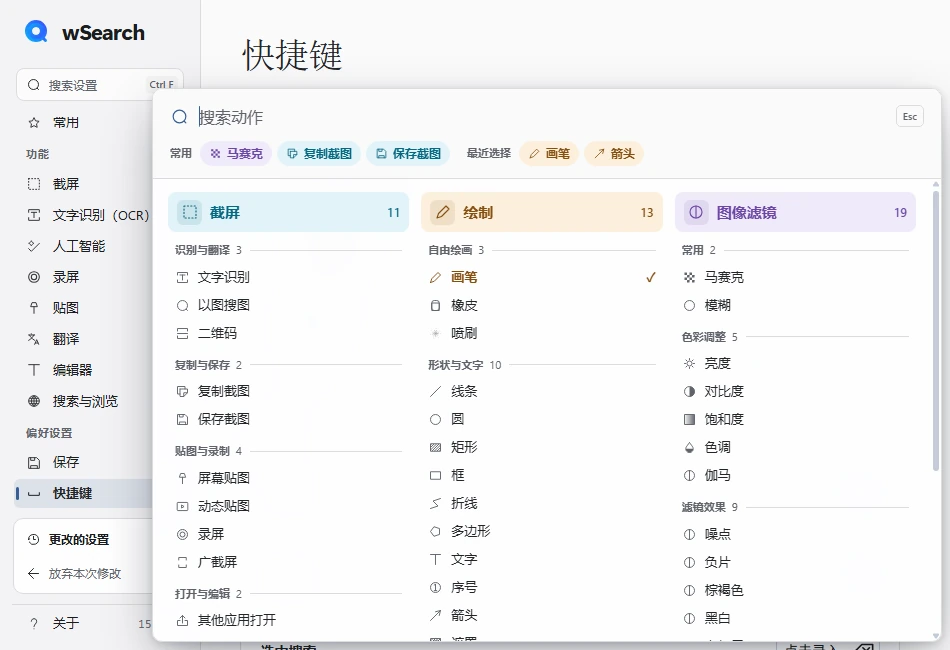

文字识别
提取截图中的文字。使用本地 OCR 离线识别，或选择已配置的在线模型。
提取截图中的文字。使用本地 OCR 离线识别，或选择已配置的在线模型。
用画笔、箭头、文字和马赛克标注截图，也可以把参考图钉在桌面。
滚动拼接超出一屏的内容，或录下操作过程，用画面说明步骤。
在设置中添加支持图像的 OpenAI 兼容、Anthropic 或 Gemini 模型，并在 OCR 中选用它。
在「快捷键 → 框选后执行」中选择图片翻译并录入组合键。画笔、保存、复制也能分别绑定。
按下组合键，框住想读的画面。视觉模型会接收所选截图，译文会显示在相应文字位置。
